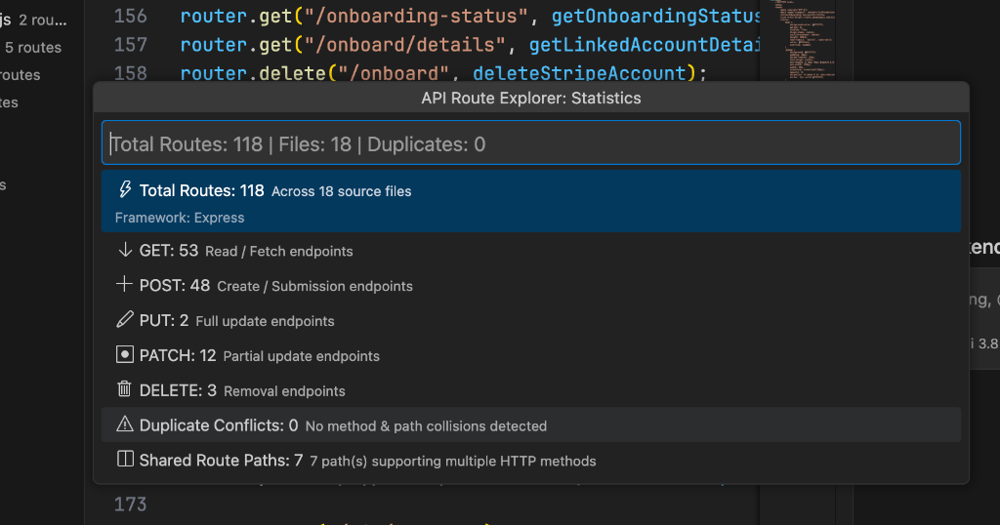
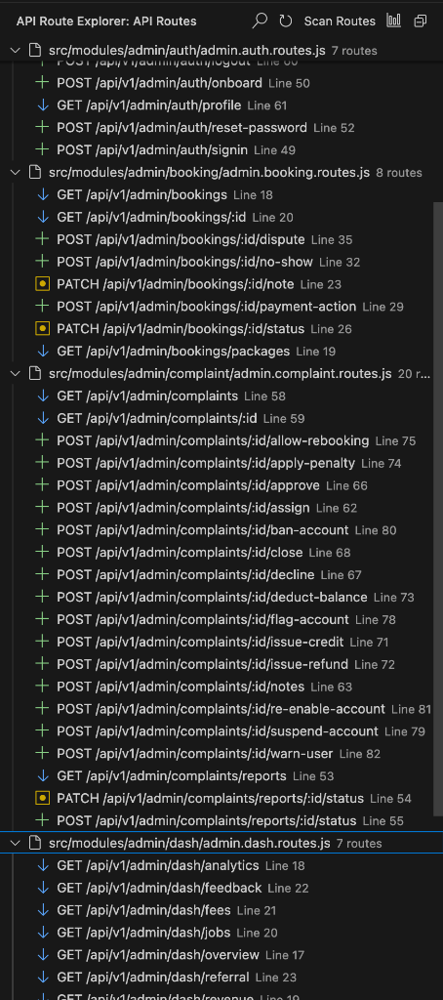
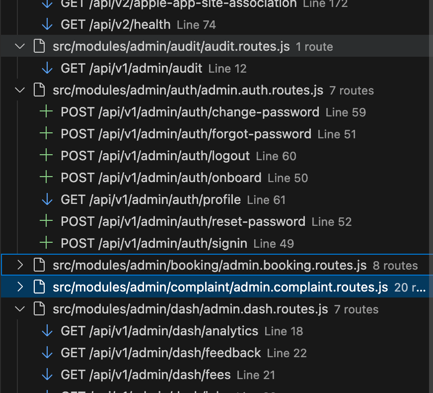

See every API route.
Jump straight to the code.
API Route Explorer discovers, analyzes, tests, and documents backend API routes directly inside VS Code.
code --install-extension api-route-explorer.api-route-explorer
{
"id": "usr_99182",
"name": "Alex Mercer",
"role": "engineer",
"verified": true
}
Stop switching between tools.
Developers lose hours each week copying URLs, swapping editor tabs, and navigating disconnected API clients.
The Traditional Friction
The API Route Explorer Way
Five steps. Zero context switching.
From raw source code to verified response and live documentation without leaving your editor.
Discover
Instant static AST analysis indexes every route across your backend without running user code.
Analyze
Detect duplicate routes, shadowed parameters, missing handlers, and active middleware stacks.
Test
Open the native HTTP Client pre-populated with method, base URL, and path parameter inputs.
Inspect
Inspect status codes, response headers, millisecond timing, payload size, and formatted JSON.
Document
Generate deterministic OpenAPI 3.0.3 specifications with single-click YAML or JSON export.
Test the route without leaving your editor.
Execute live HTTP requests directly beside your code. No cloud synchronization, no external account, and no separate desktop client required.
:id, {id}, or [id].


From route to source in one click.
Click any route in the Activity Bar TreeView to jump directly to its controller definition line and column in your editor.
Turn discovered routes into documentation.
Generate complete, compliant OpenAPI 3.0.3 specifications from discovered endpoints without writing JSDoc tags or Swagger decorators.
openapi: 3.0.3
info:
title: API Route Explorer Workspace
version: 1.0.0
paths:
/api/v1/users/{id}:
get:
summary: GET /api/v1/users/{id}
parameters:
- name: id
in: path
required: true
schema:
type: string
responses:
'200':
description: Successful response
Built for your backend stack.
First-class static route discovery for the most popular Node.js & TypeScript frameworks.
Discovers top-level application verbs and nested express.Router() mounts.
Analyzes folder-based routing in app/api/**/route.ts.
Parses fastify instance verbs and modular plugin route registrations.
Inspects TypeScript controller classes and method-level route decorators.
Your code stays on your machine.
A developer tool built with a strict offline, zero-telemetry architecture.
What API Route Explorer Does
default-src 'none'.
What API Route Explorer Never Does
YOUR WORKSPACE ──▶ API Route Explorer ──▶ Scan / Test / OpenAPI ──▶ Local Machine Only
└── [ NO CLOUD • NO ACCOUNT • NO TELEMETRY ]Ready to master your API routes?
Free and open-source. Install in seconds directly from the Visual Studio Code Marketplace.